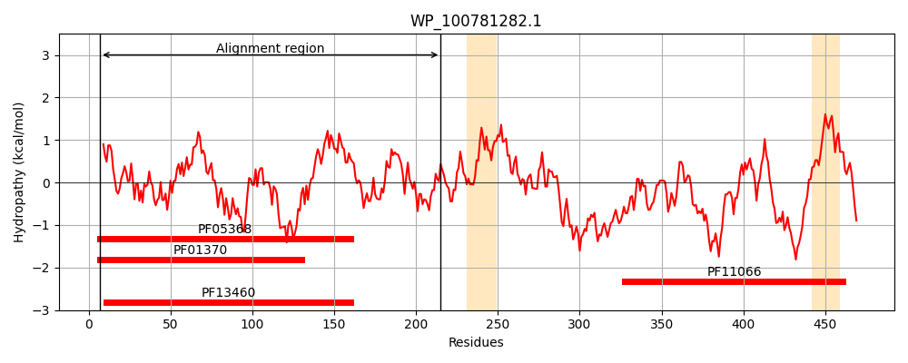
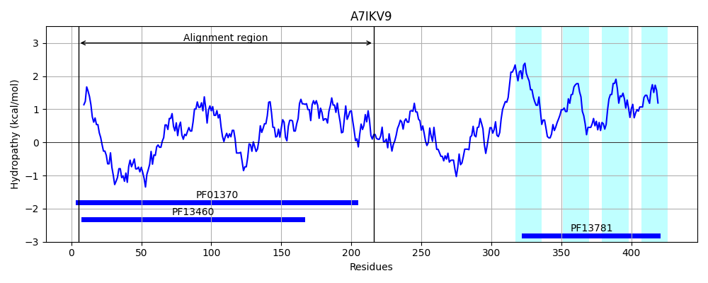
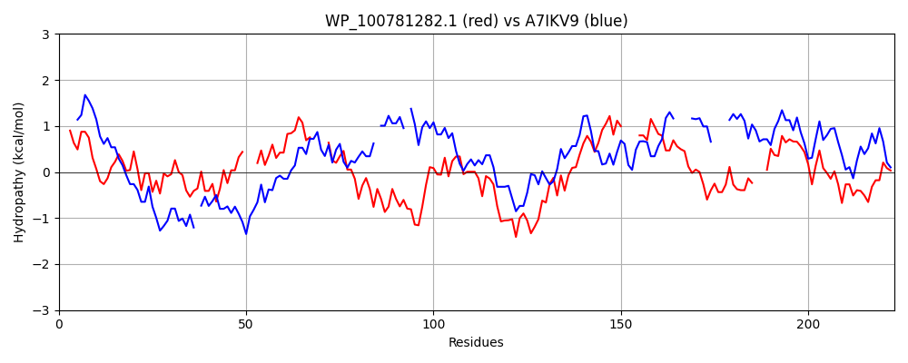

Hit Accession: A7IKV9
Hit TCID: 9.B.365.4.1
Hit Description: gnl|BL_ORD_ID|695 gnl|TC-DB|A7IKV9|9.B.365.4.1 NAD-dependent epimerase/dehydratase OS=Xanthobacter autotrophicus (strain ATCC BAA-1158 / Py2) OX=78245 GN=Xaut_3423 PE=4 SV=1
Mach Len: 223
e:0.000006
Query TMS Count : 2
Hit TMS Count: 4
TMS-Overlap Score: 0.000000
Predicted Substrates:None
BLAST Alignment:
Score: 113 , Bit scores: 48 bits, E-value: 5.6e-06, Alignment length: 223, Percentage identity: 28
Query: 7 VLGASGYIGQHLVHELSARGYPVLAAARHIDRLQKLDLPGVTCRSVDLNQ---PQALPALLAGIDTLY----YLVHGMGEGGDFIAHERRVATHVRDALRQSSVRQVIFLSSLQAPAQEQSDHLRARQVTGEVLRESGVPVTELRAGIIVG----AGSAAFEVMRDMVYNLPVLTPPRWVRSRTTP---VALENLLVDLVELLNHPSNAHRVFEAAGPEVLSY 215
VLGA+G IG +V L A G+ V AR + P +D+++ Q LAG+D + L GE + + H VA + A Q+ +R+V+ +S++ + R +QV L S + LR ++VG GSA F + LPVL V T P VAL+++ + L + V + AGPE LS+
Sbjct: 5 VLGATGLIGSTVVARLLAEGHQVRGWARRTATAARSQ-PAAEWNDLDISRLAKAQDWRPHLAGLDAVVNCAGLLQDAPGESVEAV-HATAVAA-LALACEQAGIRRVVQVSAIGLDDGTPTAFSRTKQVGDTALMVSRLEWVVLRPSVVVGRRAYGGSALFRALA----TLPVLP----VVKGTGPLDIVALDDVASTVAFFLRPGAPGRVVLDLAGPEHLSF 216 | Protein Hydropathy Plots: |
|---|
|  |  |
Pairwise Alignment-Hydropathy Plot:
|
|---|
|  |